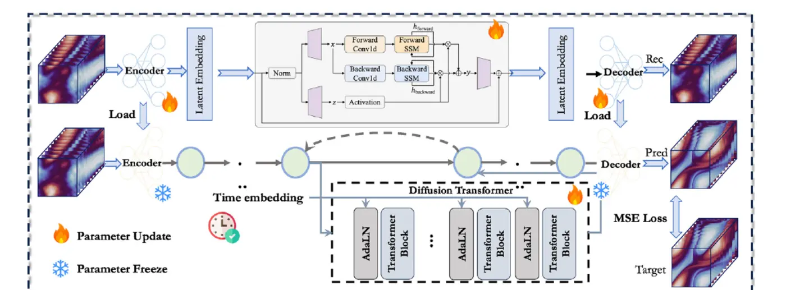
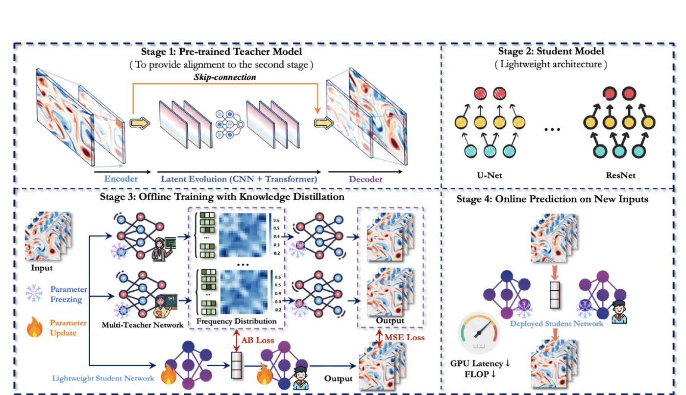
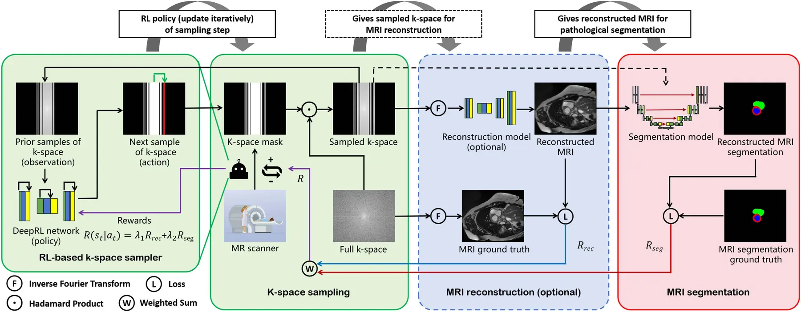

Hansheng Zeng 曾瀚圣
Junior Computer Science Student · The University of Hong Kong
Hi, I am Hansheng Zeng, a junior studying Computer Science at The University of Hong Kong. I was a visiting student in Computer Science through Berkeley Global Access at University of California, Berkeley in Spring 2026, and attended the GLOBEX Julmester Program at the College of Engineering, Peking University in Summer 2024. As a Visiting Undergraduate Scholar in the Department of Computer Science at Johns Hopkins University, I work on multimodal learning with Prof. Alan Yuille at the Computational Cognition, Vision, and Learning Group. At The University of Hong Kong, I work on AI agents with Prof. Chao Huang at the Data Intelligence Lab@HKU. I also work on spatiotemporal prediction with Prof. Chuanguang Yang at the Institute of Computing Technology, Chinese Academy of Sciences (ICT, CAS). My research interests include multimodal learning, AI agents, and spatiotemporal prediction.
News
- My first-author paper was submitted to AAAI 2027.
Selected Publications
Other publications ↓* Equal contribution.


Co-first Author
Efficient Medical Image Segmentation via Reinforcement Learning-Driven K-Space Sampling
IEEE Transactions on Emerging Topics in Computational Intelligence (TETCI), 2026
We learn an adaptive k-space sampling policy that balances MRI acquisition efficiency and segmentation quality.
Other Publications
Google Scholar ↗-
DIEq: Dynamic Identity Equilibrium for Author Disambiguation in
KDD Cup 2024 WhoIsWho-IND Challenge
KDD 2024 OAG-Challenge Cup Workshop, 2024 Team ranked 10th out of 365 teams
-
Towards Robust Medical Image Segmentation: Spectro-Spatial
Domain Generalization with MRAM and DMIR
Computer Vision and Image Understanding, 2026
-
Evolving Multimodal Models for Physical Dynamics: A
Multi-Objective Neuroevolution Approach
IEEE Transactions on Evolutionary Computation, 2026
-
AMMKD: Adaptive Multimodal Multi-Teacher Distillation for
Lightweight Vision-Language Models
arXiv preprint, 2025
-
CPG: Channel Pruning with DFS Guided Grouping for Efficient
Medical Image Segmentation
International Conference on Neural Information Processing (ICONIP), 2024